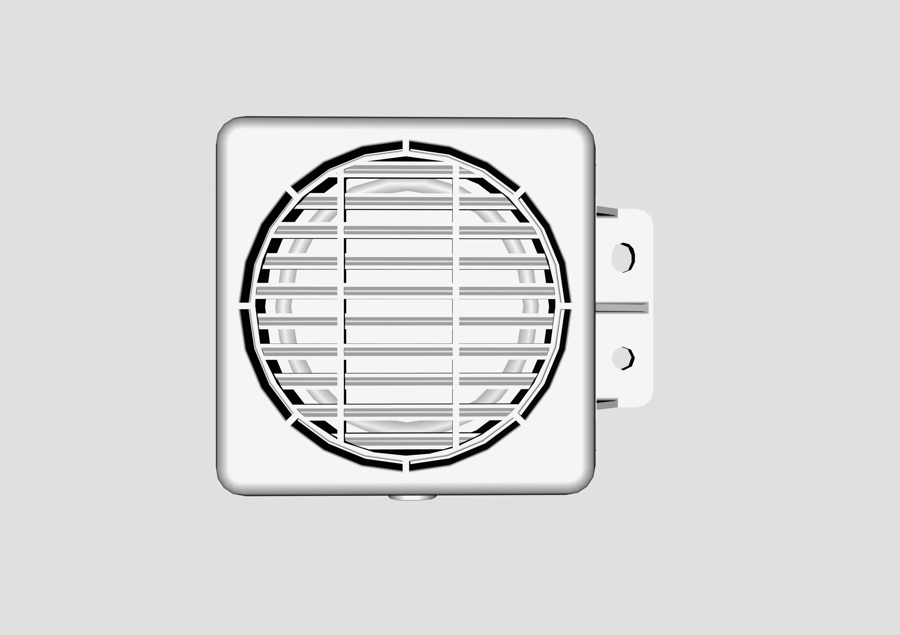
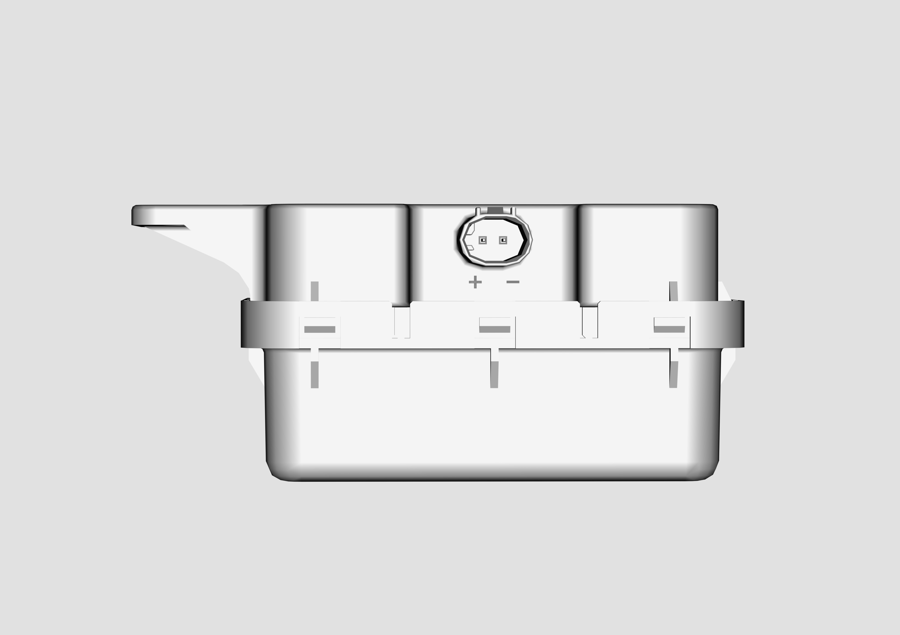

Узел предупредительного звукового сигнала при движении на малой скорости представляет собой интегрированную конструкцию из динамика и кронштейна; изделие смонтировано на монтажном кронштейне правой фары, расположенном спереди справа со стороны пассажира


|
№ |
Компонент |
|---|---|
|
1 |
Узел предупредительного звукового сигнала при движении пешеходов на малой скорости + интегрированный кронштейн |